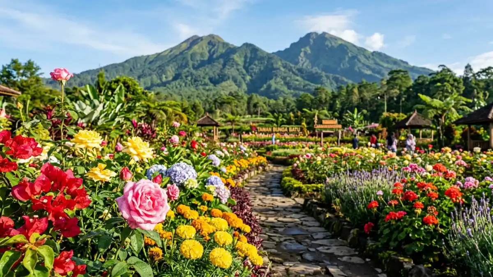

Wisata bunga di Batu adalah kegiatan menikmati keindahan taman dan kebun bunga di Kota Batu, Jawa Timur, yang terkenal karena udara sejuk dan pemandangan pegunungannya. Cocok untuk keluarga, pasangan, maupun wisatawan yang mencari spot foto alami.
DAFTAR ISI
- 1. Apa Itu Wisata Bunga di Batu?
- 2. Untuk Siapa Wisata Bunga di Batu Cocok Dikunjungi?
- 3. Kapan Waktu Terbaik Berkunjung?
- 4. Berapa Kisaran Harga Tiket Masuk?
- 5. Apa Saja Manfaat Berkunjung?
- 6. Faktor yang Perlu Diperhatikan
- 7. Kesalahan Umum Wisatawan
- 8. Tips Praktis Menikmati Wisata Bunga
- 9. Perbandingan Singkat Jenis Wisata Bunga
- 10. Kesimpulan
- FAQ
Apa Itu Wisata Bunga di Batu?
Wisata bunga di Batu merujuk pada aktivitas berkunjung ke taman, kebun, atau agrowisata yang menampilkan berbagai jenis bunga sebagai daya tarik utama di Kota Batu.
Kota Batu dikenal sebagai salah satu destinasi wisata alam unggulan di Jawa Timur karena letaknya di dataran tinggi dengan udara sejuk sepanjang tahun.
Kondisi geografis ini membuat berbagai jenis tanaman hias dan bunga dapat tumbuh dengan baik, sehingga banyak kawasan yang mengembangkan taman bunga sebagai daya tarik wisata.
Wisata jenis ini umumnya menggabungkan unsur edukasi, rekreasi keluarga, dan fotografi.
Pengunjung biasanya dapat berjalan di antara petak-petak bunga, mengambil foto, dan pada beberapa lokasi juga bisa memetik bunga tertentu sebagai bagian dari pengalaman agrowisata.
Untuk Siapa Wisata Bunga di Batu Cocok Dikunjungi?
Wisata bunga di Batu cocok untuk keluarga, pasangan, pelajar, dan wisatawan yang mencari destinasi santai dengan nuansa alam terbuka.
Destinasi ini populer di kalangan keluarga dengan anak kecil karena suasananya yang aman dan tidak terlalu menantang secara fisik.
Pasangan muda juga sering menjadikan taman bunga sebagai lokasi berfoto karena latar alam yang estetik.
Selain itu, rombongan pelajar kerap berkunjung untuk kegiatan edukasi mengenai jenis-jenis tanaman hias.
Bagi para wisatawan yang berasal dari luar kota, kunjungan ke wisata bunga biasanya digabungkan dengan destinasi lain di Batu, seperti wisata agro apel, wisata pegunungan, atau taman rekreasi keluarga.
Kapan Waktu Terbaik Berkunjung ke Wisata Bunga di Batu?
Waktu terbaik berkunjung ke wisata bunga di Batu umumnya pada pagi hari, terutama saat musim kemarau ketika kondisi bunga cenderung lebih terjaga.
Pagi hari, sekitar pukul 08.00 hingga 10.00, dianggap ideal karena udara masih sejuk, kondisi bunga masih segar, dan area belum terlalu ramai pengunjung sehingga lebih nyaman untuk berfoto.
Menurut data kunjungan wisata Kota Batu yang dirilis Dinas Pariwisata Kota Batu pada 2023, arus kunjungan wisatawan meningkat signifikan pada akhir pekan dan musim liburan sekolah, sehingga hari kerja umumnya lebih tenang.
Musim kemarau, yang di Jawa Timur biasanya berlangsung sekitar April hingga Oktober, cenderung lebih stabil untuk kondisi taman terbuka dibandingkan musim hujan karena risiko becek dan bunga rusak akibat air lebih rendah.

Taman bunga Selecta yang luas dan populer di Kota Batu. (Ilustrasi)Berapa Kisaran Harga Tiket Masuk Wisata Bunga di Batu?
Harga tiket masuk wisata bunga di Batu umumnya bervariasi tergantung lokasi, fasilitas, dan jenis wahana tambahan yang disediakan.
Secara umum, kawasan wisata bunga di Batu menawarkan harga tiket masuk yang tergolong terjangkau untuk kategori wisata keluarga, dengan kisaran yang bisa berbeda antara hari biasa dan akhir pekan atau musim liburan.
Beberapa lokasi juga menerapkan biaya tambahan untuk aktivitas tertentu seperti memetik bunga langsung atau menyewa kostum untuk berfoto.
Karena harga dapat berubah sewaktu-waktu mengikuti kebijakan pengelola, disarankan untuk mengecek informasi terbaru melalui kanal resmi masing-masing lokasi sebelum berkunjung.
Apa Saja Manfaat Berkunjung ke Wisata Bunga di Batu?
Manfaat utama wisata bunga di Batu meliputi relaksasi, edukasi tentang tanaman, dan pengalaman rekreasi keluarga di lingkungan alam terbuka.
Beberapa manfaat yang umum dirasakan pengunjung antara lain:
- Menikmati udara sejuk khas dataran tinggi yang menyegarkan.
- Mendapatkan pengetahuan dasar tentang jenis dan cara budidaya bunga.
- Memiliki ruang terbuka yang nyaman untuk anak-anak beraktivitas.
- Mendapatkan spot foto alami dengan latar taman bunga dan pegunungan.
- Menjadi alternatif wisata edukasi bagi kelompok pelajar atau komunitas.
Aktivitas ini juga sering dikaitkan dengan manfaat psikologis sederhana, karena paparan lingkungan hijau dan suasana alam terbuka umumnya membantu mengurangi rasa penat setelah aktivitas rutin.
Apa Saja Faktor yang Perlu Diperhatikan Sebelum Berkunjung?
Faktor penting sebelum berkunjung ke wisata bunga di Batu meliputi cuaca, waktu kunjungan, kondisi jalan, dan kebutuhan reservasi.
Beberapa hal yang sebaiknya diperhatikan:
- Cuaca: kondisi pegunungan dapat berubah cepat, sehingga membawa jaket dan payung sangat disarankan.
- Waktu kunjungan: menghindari jam siang saat matahari terik dapat membuat kunjungan lebih nyaman.
- Kondisi jalan: beberapa kawasan wisata berada di jalur menanjak dan berkelok, sehingga kondisi kendaraan perlu diperhatikan.
- Reservasi: pada musim liburan, beberapa lokasi populer dapat ramai sehingga pemesanan tiket lebih awal bisa membantu.
Apa Saja Kesalahan Umum Wisatawan saat Berkunjung ke Wisata Bunga di Batu?
Kesalahan umum yang sering terjadi antara lain datang di jam terlalu ramai, tidak membawa pakaian hangat, dan kurang mempersiapkan waktu perjalanan.
Beberapa kesalahan yang perlu dihindari:
- Berkunjung pada siang hari saat cuaca panas dan bunga cenderung layu.
- Tidak memperhitungkan waktu tempuh dari pusat kota, karena beberapa lokasi berada cukup jauh dari pusat Kota Batu.
- Mengabaikan perkiraan cuaca sehingga tidak membawa perlengkapan yang sesuai.
- Tidak mengecek jam operasional, karena beberapa lokasi memiliki jam buka terbatas pada hari tertentu.
Tips Praktis Menikmati Wisata Bunga di Batu
Tips utama meliputi datang pagi hari, membawa pakaian hangat, dan menyiapkan kamera untuk memaksimalkan pengalaman kunjungan.
Beberapa tips tambahan yang bisa diterapkan:
- Gunakan alas kaki yang nyaman karena area taman umumnya cukup luas untuk dijelajahi dengan berjalan kaki.
- Bawa air minum secukupnya, terutama jika berkunjung bersama anak-anak.
- Manfaatkan waktu pagi untuk pencahayaan foto yang lebih natural.
- Kombinasikan kunjungan dengan destinasi wisata agro atau kuliner khas Batu untuk pengalaman yang lebih lengkap.
Perbandingan Singkat Jenis Wisata Bunga di Batu
Wisata bunga di Batu umumnya terbagi menjadi taman bunga rekreasi, agrowisata petik bunga, dan kebun bunga edukasi.
Taman bunga rekreasi biasanya berfokus pada spot foto dan area bersantai keluarga. Agrowisata petik bunga menawarkan pengalaman langsung berinteraksi dengan tanaman, termasuk memetik bunga tertentu sesuai ketentuan pengelola.
Sementara kebun bunga edukasi lebih menekankan aspek pengetahuan tentang jenis dan perawatan tanaman, sehingga sering menjadi tujuan kunjungan rombongan sekolah.
Setiap jenis memiliki daya tarik berbeda, sehingga pemilihan lokasi sebaiknya disesuaikan dengan tujuan kunjungan, apakah untuk relaksasi, edukasi, atau dokumentasi foto.
Kesimpulan
Wisata bunga di Batu menawarkan pengalaman rekreasi alam yang cocok untuk berbagai kalangan, mulai dari keluarga hingga pelajar.
Untuk pengalaman terbaik, kunjungan pada pagi hari di musim kemarau, persiapan pakaian hangat, dan pengecekan informasi tiket terbaru sangat disarankan sebelum berangkat.